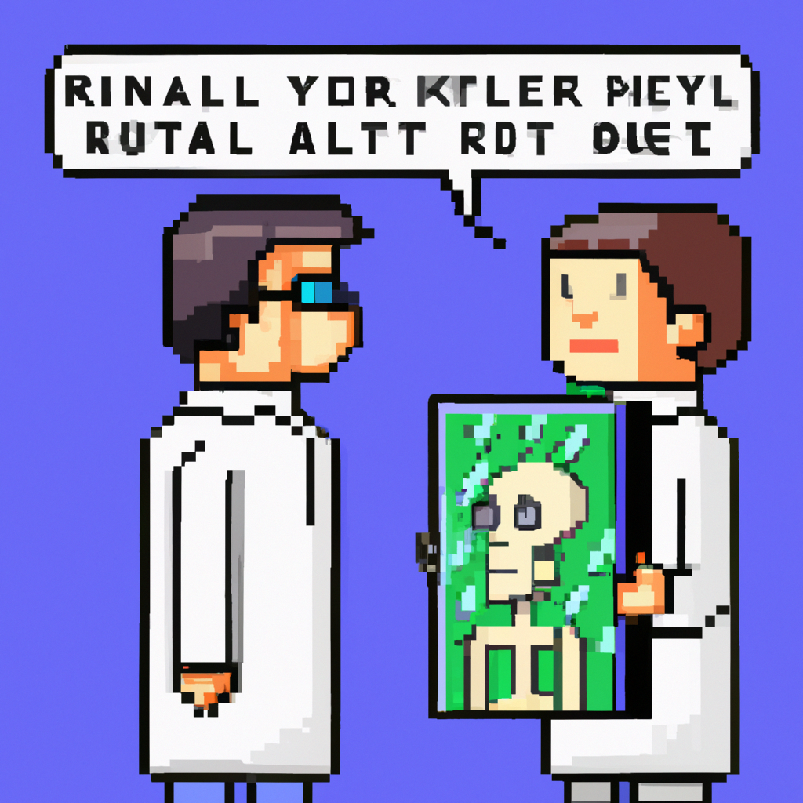

Why AI will never replace the radiologist
Many people think that artificial intelligence (AI) is going to replace radiologists, but I disagree. AI is certainly poised to increase the efficiency of radiologists, but there are many reasons why AI will never replace the radiologist.
First, AI is not yet capable of making accurate diagnoses. While AI can be used to detect abnormalities in medical imagery, the radiologist is still needed to provide a diagnosis. AI can only provide a probability of a diagnosis, and it is up to the radiologist to interpret the data and provide a diagnosis.
Second, AI relies on data to make accurate predictions. If the data used to train the AI is not accurate or is incomplete, the results may not be as accurate as those of a radiologist. Human radiologists have years of experience and the ability to recognize patterns that AI can't.
Finally, AI can't provide the same level of empathy and care that a radiologist can. Radiologists are able to provide patients with comfort and reassurance, and AI is not able to do this.
In conclusion, AI may be able to increase the efficiency of radiologists, but it will never replace them. Radiologists provide a valuable service that AI cannot match.